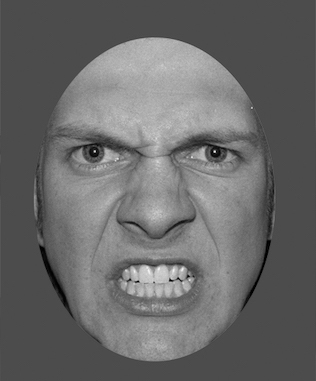
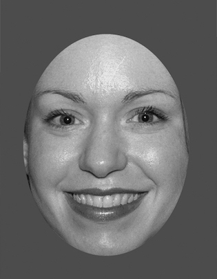

<!doctype html>
<html lang="en">

<head>
	<title>Emotion Discrimination [jsPsych]</title>
	<meta charset="UTF-8">
	<script src="jspsych-6.3.0/jspsych.js"></script>
    <script src="jspsych-6.3.0/plugins/jspsych-html-keyboard-response.js"></script>
    <script src="jspsych-6.3.0/plugins/jspsych-html-button-response.js"></script>
    <script src="jspsych-6.3.0/plugins/jspsych-image-keyboard-response.js"></script>
	<script src="jspsych-6.3.0/plugins/jspsych-preload.js"></script>
	<script src="jspsych-6.3.0/plugins/jspsych-call-function.js"></script>    
    <script src="https://ajax.googleapis.com/ajax/libs/jquery/2.2.0/jquery.min.js"></script>
	<script src=//cdnjs.cloudflare.com/ajax/libs/seedrandom/2.3.10/seedrandom.min.js> </script> 
    <script src="jspsych-6.3.0/plugins/jspsych-fullscreen.js"></script>
      <link href="jspsych-6.3.0/css/jspsych.css" rel="stylesheet" type="text/css"></link>


	
</head>

<body>
	<script type='text/javascript'>
	
	
	/* Script created by Reilly Innes (2021) for a 2 alternate forced choice task (decision making RT task) 
	based on code provided on jspsych for simple choice rt experiment. The code takes images from the /img folder,
	shows them on screen (randomly) and asks for participants to make a response. All variables and RTs are recorded in a csv file. 
	Currently the script is set up to output to JATOS. 
	In the script, there is first a welcome and instructions, then a practice block, then nblocks of testing and then a debrief block. 
	
	To include your own stimulus, delete all images from /img directory and paste your images there. 
	Next take the R script to format the names of the images to stimuli. In this script, be sure to set correct responses. 
	In the code, you can change any text to include instructions. 
	A practice block with feedback is also included here. To change the length of the practice block, change the stimuli included. 
	To set the number of blocks, change the nblocks variable.
	To change the response keys (currently set as F and J), change the responseLeft and responseRight variables.
	Note that these variables are also called for the correct responses to stimuli.
	To use the same stimulus multiple times, you will have to change the code (and use jspsych repetitions functionality)
	Alternatively, you can include repeats of the stimuli in the image folder, but this is randomised.
	To include a set block order, make subfolders in /img and then make your test_stim into n arrays pulled from each subfolder (i.e. block 1 would be img/block1/ -> test_stim[1])
	You can also add a post trial gap by adding in this variable in the test_procedure timeline after test.
	You can change the fixation time in fixation; trial_duration. 
	The practice block will run for as many trials as there are prac_stimuli (randomly showing these)
	
	For more details, contact reilly.innes@uon.edu.au. To cite this work use the citation;
	
	*/
	
		
	
		
		/* create timeline */
		var timeline = [];
		var nblocks = 1;
		var timeout = 4000;	
		var tooFast = 150;
		var postTrialGap = 500;
		var responseLeft = 'z';
		var responseRight = '/';
		var online = true;
		var username; 
		var currentTask;
		if (online == true){
			// username = jatos.urlQueryParameters.PROLIFIC_PID
			// console.log(username)
		}else{
			var username;
		}
		
		var preload = {
   			 type: 'preload',
  			  auto_preload: true 
		}
		timeline.push(preload)
		timeline.push({
 		 type: 'fullscreen',
 		 fullscreen_mode: true
		});
		

		/* define welcome message trial */
		if (online){
		var welcome = {
			type: "html-keyboard-response",
			choices: [' '],
			post_trial_gap: 1000,
			stimulus: "Welcome to the experiment. Press space bar to begin.",
			data: { subject: username }
		};
		}else{
		var welcome = {
			type: "html-keyboard-response",
			choices: [' '],
			post_trial_gap: 1000,
			stimulus: "Welcome to the experiment. Press space bar to begin."
		};
		}
		timeline.push(welcome);
		
		
		var buttonRight = {
			type: "image-keyboard-response",
			post_trial_gap: 1000,
			stimulus: 'setup/keyboard-right.png',
			prompt: "<br>"+
					"<br>"+"Please press this right button.",
			on_finish: function(data){
				responseRight = data.response
			}
		};
		
		var buttonLeft = {
			type: "image-keyboard-response",
			post_trial_gap: 1000,
			stimulus: 'setup/keyboard-left.png',
			prompt: "<br>"+
					"<br>"+"Please press this left button.",
			on_finish: function(data){
				responseLeft = data.response
			}
		};
		
		
		var correctButtons = {
			type: "html-button-response",
			choices: ['Yes', 'No'],
			post_trial_gap: 1000,
			stimulus: function(){
			return "<p> The left response button is <strong>" + responseLeft.toUpperCase() + "</strong> and the right response button is <strong>" + responseRight.toUpperCase() + " </strong>. </p>" +
			"<p> Are these correct? </p>"
			},
			on_finish: function(data){
				if(responseLeft==responseRight){
					goodButtons = 1
				}else {
				goodButtons =  data.response
				}
			}
		};		
		
		
		var buttons = {
			timeline: [ buttonLeft, buttonRight, correctButtons],
			loop_function: function(){
				key_response = goodButtons;
     	 		if(key_response == 1){
       			 return true;
      			} else {
        		return false;
      			}
    		}
		}
		
  		timeline.push(buttons);


		/* define instructions trial */
		var instructions = {
			type: "html-keyboard-response",
			choices: jsPsych.NO_KEYS,
			stimulus: function(){
				return "<p>In this experiment, you will be presented with a series of faces.</p>" +
				"<p>You must decide if these faces are happy or angry </p>" +
				"<p>If the face is <strong>Angry</strong>, " +
				"press " + responseLeft.toUpperCase() + " ." +
				"<p>If the face is <strong>Happy</strong>, press " + responseRight.toUpperCase() + " ." +
				"<p> We recommend resting your left and right index fingers on these keys.</p>" + 
				" <p> <b>Please respond as quickly and accurately as possible.</b>" +
				"<div style='width: 700px;'>" +
				"<div style='float: left;'>" +
				"<p class='small'> This face is Angry  = <strong> Press the " + responseLeft.toUpperCase() + " key</strong></p></div>" +
				"<div class='float: right;'>" +
				"<p class='small'>This face is Happy  = <strong> Press the " + responseRight.toUpperCase() + " key</strong></p></div>" +
				"</div>" +
				"<p> You can commence the experiment shortly. </p>"
				},
			trial_duration: 10000,
			post_trial_gap: 0
		};
		timeline.push(instructions);

		var instructions2 = {
			type: "html-keyboard-response",
			choices: [' '],
			stimulus: function(){
				return "<p>In this experiment, you will be presented with a series of faces.</p>" +
				"<p>You must decide if these faces are happy or angry </p>" +
				"<p>If the face is <strong>Angry</strong>, " +
				"press " + responseLeft.toUpperCase() + " ." +
				"<p>If the face is <strong>Happy</strong>, press " + responseRight.toUpperCase() + " ." +
				"<p> We recommend resting your left and right index fingers on these keys.</p>" + 
				" <p> <b>Please respond as quickly and accurately as possible.</b>" +
				"<div style='width: 700px;'>" +
				"<div style='float: left;'>" +
				"<p class='small'> This face is Angry  = <strong> Press the " + responseLeft.toUpperCase() + " key</strong></p></div>" +
				"<div class='float: right;'>" +
				"<p class='small'>This face is Happy  = <strong> Press the " + responseRight.toUpperCase() + " key</strong></p></div>" +
				"</div>" +
				"<p><b>Press space bar to begin.</b></p>"
				},
			post_trial_gap: 1000
		};
		timeline.push(instructions2);


		/* test trials */
		var test_stimuli = [{ stimulus: 'img/FAC01.jpg', data: {test_part: 'test', cond: 'Angry', correct_response: function(){return responseLeft} , Gender: 'female' , Mouth: 'closed'  } },{ stimulus: 'img/FAC02.jpg', data: {test_part: 'test', cond: 'Angry', correct_response: function(){return responseLeft} , Gender: 'female' , Mouth: 'closed'  } },{ stimulus: 'img/FAC03.jpg', data: {test_part: 'test', cond: 'Angry', correct_response: function(){return responseLeft} , Gender: 'female' , Mouth: 'closed'  } },{ stimulus: 'img/FAC04.jpg', data: {test_part: 'test', cond: 'Angry', correct_response: function(){return responseLeft} , Gender: 'female' , Mouth: 'closed'  } },{ stimulus: 'img/FAC05.jpg', data: {test_part: 'test', cond: 'Angry', correct_response: function(){return responseLeft} , Gender: 'female' , Mouth: 'closed'  } },{ stimulus: 'img/FAC06.jpg', data: {test_part: 'test', cond: 'Angry', correct_response: function(){return responseLeft} , Gender: 'female' , Mouth: 'closed'  } },{ stimulus: 'img/FAC07.jpg', data: {test_part: 'test', cond: 'Angry', correct_response: function(){return responseLeft} , Gender: 'female' , Mouth: 'closed'  } },{ stimulus: 'img/FAC08.jpg', data: {test_part: 'test', cond: 'Angry', correct_response: function(){return responseLeft} , Gender: 'female' , Mouth: 'closed'  } },{ stimulus: 'img/FAC09.jpg', data: {test_part: 'test', cond: 'Angry', correct_response: function(){return responseLeft} , Gender: 'female' , Mouth: 'closed'  } },{ stimulus: 'img/FAC10.jpg', data: {test_part: 'test', cond: 'Angry', correct_response: function(){return responseLeft} , Gender: 'female' , Mouth: 'closed'  } },{ stimulus: 'img/FAC11.jpg', data: {test_part: 'test', cond: 'Angry', correct_response: function(){return responseLeft} , Gender: 'female' , Mouth: 'closed'  } },{ stimulus: 'img/FAC12.jpg', data: {test_part: 'test', cond: 'Angry', correct_response: function(){return responseLeft} , Gender: 'female' , Mouth: 'closed'  } },{ stimulus: 'img/FAC13.jpg', data: {test_part: 'test', cond: 'Angry', correct_response: function(){return responseLeft} , Gender: 'female' , Mouth: 'closed'  } },{ stimulus: 'img/FAC14.jpg', data: {test_part: 'test', cond: 'Angry', correct_response: function(){return responseLeft} , Gender: 'female' , Mouth: 'closed'  } },{ stimulus: 'img/FAC15.jpg', data: {test_part: 'test', cond: 'Angry', correct_response: function(){return responseLeft} , Gender: 'female' , Mouth: 'closed'  } },{ stimulus: 'img/FAC16.jpg', data: {test_part: 'test', cond: 'Angry', correct_response: function(){return responseLeft} , Gender: 'female' , Mouth: 'closed'  } },{ stimulus: 'img/FAC17.jpg', data: {test_part: 'test', cond: 'Angry', correct_response: function(){return responseLeft} , Gender: 'female' , Mouth: 'closed'  } },{ stimulus: 'img/FAC18.jpg', data: {test_part: 'test', cond: 'Angry', correct_response: function(){return responseLeft} , Gender: 'female' , Mouth: 'closed'  } },{ stimulus: 'img/FAC19.jpg', data: {test_part: 'test', cond: 'Angry', correct_response: function(){return responseLeft} , Gender: 'female' , Mouth: 'closed'  } },{ stimulus: 'img/FAC20.jpg', data: {test_part: 'test', cond: 'Angry', correct_response: function(){return responseLeft} , Gender: 'female' , Mouth: 'closed'  } },{ stimulus: 'img/FAC21.jpg', data: {test_part: 'test', cond: 'Angry', correct_response: function(){return responseLeft} , Gender: 'female' , Mouth: 'closed'  } },{ stimulus: 'img/FAC22.jpg', data: {test_part: 'test', cond: 'Angry', correct_response: function(){return responseLeft} , Gender: 'female' , Mouth: 'closed'  } },{ stimulus: 'img/FAO01.jpg', data: {test_part: 'test', cond: 'Angry', correct_response: function(){return responseLeft} , Gender: 'female' , Mouth: 'open'  } },{ stimulus: 'img/FAO02.jpg', data: {test_part: 'test', cond: 'Angry', correct_response: function(){return responseLeft} , Gender: 'female' , Mouth: 'open'  } },{ stimulus: 'img/FAO03.jpg', data: {test_part: 'test', cond: 'Angry', correct_response: function(){return responseLeft} , Gender: 'female' , Mouth: 'open'  } },{ stimulus: 'img/FAO04.jpg', data: {test_part: 'test', cond: 'Angry', correct_response: function(){return responseLeft} , Gender: 'female' , Mouth: 'open'  } },{ stimulus: 'img/FAO05.jpg', data: {test_part: 'test', cond: 'Angry', correct_response: function(){return responseLeft} , Gender: 'female' , Mouth: 'open'  } },{ stimulus: 'img/FAO06.jpg', data: {test_part: 'test', cond: 'Angry', correct_response: function(){return responseLeft} , Gender: 'female' , Mouth: 'open'  } },{ stimulus: 'img/FAO07.jpg', data: {test_part: 'test', cond: 'Angry', correct_response: function(){return responseLeft} , Gender: 'female' , Mouth: 'open'  } },{ stimulus: 'img/FAO08.jpg', data: {test_part: 'test', cond: 'Angry', correct_response: function(){return responseLeft} , Gender: 'female' , Mouth: 'open'  } },{ stimulus: 'img/FAO09.jpg', data: {test_part: 'test', cond: 'Angry', correct_response: function(){return responseLeft} , Gender: 'female' , Mouth: 'open'  } },{ stimulus: 'img/FAO10.jpg', data: {test_part: 'test', cond: 'Angry', correct_response: function(){return responseLeft} , Gender: 'female' , Mouth: 'open'  } },{ stimulus: 'img/FAO11.jpg', data: {test_part: 'test', cond: 'Angry', correct_response: function(){return responseLeft} , Gender: 'female' , Mouth: 'open'  } },{ stimulus: 'img/FAO12.jpg', data: {test_part: 'test', cond: 'Angry', correct_response: function(){return responseLeft} , Gender: 'female' , Mouth: 'open'  } },{ stimulus: 'img/FAO13.jpg', data: {test_part: 'test', cond: 'Angry', correct_response: function(){return responseLeft} , Gender: 'female' , Mouth: 'open'  } },{ stimulus: 'img/FAO14.jpg', data: {test_part: 'test', cond: 'Angry', correct_response: function(){return responseLeft} , Gender: 'female' , Mouth: 'open'  } },{ stimulus: 'img/FAO15.jpg', data: {test_part: 'test', cond: 'Angry', correct_response: function(){return responseLeft} , Gender: 'female' , Mouth: 'open'  } },{ stimulus: 'img/FAO16.jpg', data: {test_part: 'test', cond: 'Angry', correct_response: function(){return responseLeft} , Gender: 'female' , Mouth: 'open'  } },{ stimulus: 'img/FAO17.jpg', data: {test_part: 'test', cond: 'Angry', correct_response: function(){return responseLeft} , Gender: 'female' , Mouth: 'open'  } },{ stimulus: 'img/FAO18.jpg', data: {test_part: 'test', cond: 'Angry', correct_response: function(){return responseLeft} , Gender: 'female' , Mouth: 'open'  } },{ stimulus: 'img/FAO19.jpg', data: {test_part: 'test', cond: 'Angry', correct_response: function(){return responseLeft} , Gender: 'female' , Mouth: 'open'  } },{ stimulus: 'img/FAO20.jpg', data: {test_part: 'test', cond: 'Angry', correct_response: function(){return responseLeft} , Gender: 'female' , Mouth: 'open'  } },{ stimulus: 'img/FAO21.jpg', data: {test_part: 'test', cond: 'Angry', correct_response: function(){return responseLeft} , Gender: 'female' , Mouth: 'open'  } },{ stimulus: 'img/FAO22.jpg', data: {test_part: 'test', cond: 'Angry', correct_response: function(){return responseLeft} , Gender: 'female' , Mouth: 'open'  } },{ stimulus: 'img/FHC01.jpg', data: {test_part: 'test', cond: 'Happy', correct_response: function(){return responseRight} , Gender: 'female' , Mouth: 'closed'  } },{ stimulus: 'img/FHC02.jpg', data: {test_part: 'test', cond: 'Happy', correct_response: function(){return responseRight} , Gender: 'female' , Mouth: 'closed'  } },{ stimulus: 'img/FHC03.jpg', data: {test_part: 'test', cond: 'Happy', correct_response: function(){return responseRight} , Gender: 'female' , Mouth: 'closed'  } },{ stimulus: 'img/FHC04.jpg', data: {test_part: 'test', cond: 'Happy', correct_response: function(){return responseRight} , Gender: 'female' , Mouth: 'closed'  } },{ stimulus: 'img/FHC05.jpg', data: {test_part: 'test', cond: 'Happy', correct_response: function(){return responseRight} , Gender: 'female' , Mouth: 'closed'  } },{ stimulus: 'img/FHC06.jpg', data: {test_part: 'test', cond: 'Happy', correct_response: function(){return responseRight} , Gender: 'female' , Mouth: 'closed'  } },{ stimulus: 'img/FHC07.jpg', data: {test_part: 'test', cond: 'Happy', correct_response: function(){return responseRight} , Gender: 'female' , Mouth: 'closed'  } },{ stimulus: 'img/FHC08.jpg', data: {test_part: 'test', cond: 'Happy', correct_response: function(){return responseRight} , Gender: 'female' , Mouth: 'closed'  } },{ stimulus: 'img/FHC09.jpg', data: {test_part: 'test', cond: 'Happy', correct_response: function(){return responseRight} , Gender: 'female' , Mouth: 'closed'  } },{ stimulus: 'img/FHC10.jpg', data: {test_part: 'test', cond: 'Happy', correct_response: function(){return responseRight} , Gender: 'female' , Mouth: 'closed'  } },{ stimulus: 'img/FHC11.jpg', data: {test_part: 'test', cond: 'Happy', correct_response: function(){return responseRight} , Gender: 'female' , Mouth: 'closed'  } },{ stimulus: 'img/FHC12.jpg', data: {test_part: 'test', cond: 'Happy', correct_response: function(){return responseRight} , Gender: 'female' , Mouth: 'closed'  } },{ stimulus: 'img/FHC13.jpg', data: {test_part: 'test', cond: 'Happy', correct_response: function(){return responseRight} , Gender: 'female' , Mouth: 'closed'  } },{ stimulus: 'img/FHC14.jpg', data: {test_part: 'test', cond: 'Happy', correct_response: function(){return responseRight} , Gender: 'female' , Mouth: 'closed'  } },{ stimulus: 'img/FHC15.jpg', data: {test_part: 'test', cond: 'Happy', correct_response: function(){return responseRight} , Gender: 'female' , Mouth: 'closed'  } },{ stimulus: 'img/FHC16.jpg', data: {test_part: 'test', cond: 'Happy', correct_response: function(){return responseRight} , Gender: 'female' , Mouth: 'closed'  } },{ stimulus: 'img/FHC17.jpg', data: {test_part: 'test', cond: 'Happy', correct_response: function(){return responseRight} , Gender: 'female' , Mouth: 'closed'  } },{ stimulus: 'img/FHC18.jpg', data: {test_part: 'test', cond: 'Happy', correct_response: function(){return responseRight} , Gender: 'female' , Mouth: 'closed'  } },{ stimulus: 'img/FHC19.jpg', data: {test_part: 'test', cond: 'Happy', correct_response: function(){return responseRight} , Gender: 'female' , Mouth: 'closed'  } },{ stimulus: 'img/FHC20.jpg', data: {test_part: 'test', cond: 'Happy', correct_response: function(){return responseRight} , Gender: 'female' , Mouth: 'closed'  } },{ stimulus: 'img/FHC21.jpg', data: {test_part: 'test', cond: 'Happy', correct_response: function(){return responseRight} , Gender: 'female' , Mouth: 'closed'  } },{ stimulus: 'img/FHC22.jpg', data: {test_part: 'test', cond: 'Happy', correct_response: function(){return responseRight} , Gender: 'female' , Mouth: 'closed'  } },{ stimulus: 'img/FHO01.jpg', data: {test_part: 'test', cond: 'Happy', correct_response: function(){return responseRight} , Gender: 'female' , Mouth: 'open'  } },{ stimulus: 'img/FHO02.jpg', data: {test_part: 'test', cond: 'Happy', correct_response: function(){return responseRight} , Gender: 'female' , Mouth: 'open'  } },{ stimulus: 'img/FHO03.jpg', data: {test_part: 'test', cond: 'Happy', correct_response: function(){return responseRight} , Gender: 'female' , Mouth: 'open'  } },{ stimulus: 'img/FHO04.jpg', data: {test_part: 'test', cond: 'Happy', correct_response: function(){return responseRight} , Gender: 'female' , Mouth: 'open'  } },{ stimulus: 'img/FHO05.jpg', data: {test_part: 'test', cond: 'Happy', correct_response: function(){return responseRight} , Gender: 'female' , Mouth: 'open'  } },{ stimulus: 'img/FHO06.jpg', data: {test_part: 'test', cond: 'Happy', correct_response: function(){return responseRight} , Gender: 'female' , Mouth: 'open'  } },{ stimulus: 'img/FHO07.jpg', data: {test_part: 'test', cond: 'Happy', correct_response: function(){return responseRight} , Gender: 'female' , Mouth: 'open'  } },{ stimulus: 'img/FHO08.jpg', data: {test_part: 'test', cond: 'Happy', correct_response: function(){return responseRight} , Gender: 'female' , Mouth: 'open'  } },{ stimulus: 'img/FHO09.jpg', data: {test_part: 'test', cond: 'Happy', correct_response: function(){return responseRight} , Gender: 'female' , Mouth: 'open'  } },{ stimulus: 'img/FHO10.jpg', data: {test_part: 'test', cond: 'Happy', correct_response: function(){return responseRight} , Gender: 'female' , Mouth: 'open'  } },{ stimulus: 'img/FHO11.jpg', data: {test_part: 'test', cond: 'Happy', correct_response: function(){return responseRight} , Gender: 'female' , Mouth: 'open'  } },{ stimulus: 'img/FHO12.jpg', data: {test_part: 'test', cond: 'Happy', correct_response: function(){return responseRight} , Gender: 'female' , Mouth: 'open'  } },{ stimulus: 'img/FHO13.jpg', data: {test_part: 'test', cond: 'Happy', correct_response: function(){return responseRight} , Gender: 'female' , Mouth: 'open'  } },{ stimulus: 'img/FHO14.jpg', data: {test_part: 'test', cond: 'Happy', correct_response: function(){return responseRight} , Gender: 'female' , Mouth: 'open'  } },{ stimulus: 'img/FHO15.jpg', data: {test_part: 'test', cond: 'Happy', correct_response: function(){return responseRight} , Gender: 'female' , Mouth: 'open'  } },{ stimulus: 'img/FHO16.jpg', data: {test_part: 'test', cond: 'Happy', correct_response: function(){return responseRight} , Gender: 'female' , Mouth: 'open'  } },{ stimulus: 'img/FHO17.jpg', data: {test_part: 'test', cond: 'Happy', correct_response: function(){return responseRight} , Gender: 'female' , Mouth: 'open'  } },{ stimulus: 'img/FHO18.jpg', data: {test_part: 'test', cond: 'Happy', correct_response: function(){return responseRight} , Gender: 'female' , Mouth: 'open'  } },{ stimulus: 'img/FHO19.jpg', data: {test_part: 'test', cond: 'Happy', correct_response: function(){return responseRight} , Gender: 'female' , Mouth: 'open'  } },{ stimulus: 'img/FHO20.jpg', data: {test_part: 'test', cond: 'Happy', correct_response: function(){return responseRight} , Gender: 'female' , Mouth: 'open'  } },{ stimulus: 'img/FHO21.jpg', data: {test_part: 'test', cond: 'Happy', correct_response: function(){return responseRight} , Gender: 'female' , Mouth: 'open'  } },{ stimulus: 'img/FHO22.jpg', data: {test_part: 'test', cond: 'Happy', correct_response: function(){return responseRight} , Gender: 'female' , Mouth: 'open'  } },{ stimulus: 'img/MAC01.jpg', data: {test_part: 'test', cond: 'Angry', correct_response: function(){return responseLeft} , Gender: 'male' , Mouth: 'closed'  } },{ stimulus: 'img/MAC02.jpg', data: {test_part: 'test', cond: 'Angry', correct_response: function(){return responseLeft} , Gender: 'male' , Mouth: 'closed'  } },{ stimulus: 'img/MAC03.jpg', data: {test_part: 'test', cond: 'Angry', correct_response: function(){return responseLeft} , Gender: 'male' , Mouth: 'closed'  } },{ stimulus: 'img/MAC04.jpg', data: {test_part: 'test', cond: 'Angry', correct_response: function(){return responseLeft} , Gender: 'male' , Mouth: 'closed'  } },{ stimulus: 'img/MAC05.jpg', data: {test_part: 'test', cond: 'Angry', correct_response: function(){return responseLeft} , Gender: 'male' , Mouth: 'closed'  } },{ stimulus: 'img/MAC06.jpg', data: {test_part: 'test', cond: 'Angry', correct_response: function(){return responseLeft} , Gender: 'male' , Mouth: 'closed'  } },{ stimulus: 'img/MAC07.jpg', data: {test_part: 'test', cond: 'Angry', correct_response: function(){return responseLeft} , Gender: 'male' , Mouth: 'closed'  } },{ stimulus: 'img/MAC08.jpg', data: {test_part: 'test', cond: 'Angry', correct_response: function(){return responseLeft} , Gender: 'male' , Mouth: 'closed'  } },{ stimulus: 'img/MAC09.jpg', data: {test_part: 'test', cond: 'Angry', correct_response: function(){return responseLeft} , Gender: 'male' , Mouth: 'closed'  } },{ stimulus: 'img/MAC10.jpg', data: {test_part: 'test', cond: 'Angry', correct_response: function(){return responseLeft} , Gender: 'male' , Mouth: 'closed'  } },{ stimulus: 'img/MAC11.jpg', data: {test_part: 'test', cond: 'Angry', correct_response: function(){return responseLeft} , Gender: 'male' , Mouth: 'closed'  } },{ stimulus: 'img/MAC12.jpg', data: {test_part: 'test', cond: 'Angry', correct_response: function(){return responseLeft} , Gender: 'male' , Mouth: 'closed'  } },{ stimulus: 'img/MAC13.jpg', data: {test_part: 'test', cond: 'Angry', correct_response: function(){return responseLeft} , Gender: 'male' , Mouth: 'closed'  } },{ stimulus: 'img/MAC14.jpg', data: {test_part: 'test', cond: 'Angry', correct_response: function(){return responseLeft} , Gender: 'male' , Mouth: 'closed'  } },{ stimulus: 'img/MAC15.jpg', data: {test_part: 'test', cond: 'Angry', correct_response: function(){return responseLeft} , Gender: 'male' , Mouth: 'closed'  } },{ stimulus: 'img/MAC16.jpg', data: {test_part: 'test', cond: 'Angry', correct_response: function(){return responseLeft} , Gender: 'male' , Mouth: 'closed'  } },{ stimulus: 'img/MAC17.jpg', data: {test_part: 'test', cond: 'Angry', correct_response: function(){return responseLeft} , Gender: 'male' , Mouth: 'closed'  } },{ stimulus: 'img/MAC18.jpg', data: {test_part: 'test', cond: 'Angry', correct_response: function(){return responseLeft} , Gender: 'male' , Mouth: 'closed'  } },{ stimulus: 'img/MAC19.jpg', data: {test_part: 'test', cond: 'Angry', correct_response: function(){return responseLeft} , Gender: 'male' , Mouth: 'closed'  } },{ stimulus: 'img/MAC20.jpg', data: {test_part: 'test', cond: 'Angry', correct_response: function(){return responseLeft} , Gender: 'male' , Mouth: 'closed'  } },{ stimulus: 'img/MAC21.jpg', data: {test_part: 'test', cond: 'Angry', correct_response: function(){return responseLeft} , Gender: 'male' , Mouth: 'closed'  } },{ stimulus: 'img/MAC22.jpg', data: {test_part: 'test', cond: 'Angry', correct_response: function(){return responseLeft} , Gender: 'male' , Mouth: 'closed'  } },{ stimulus: 'img/MAO01.jpg', data: {test_part: 'test', cond: 'Angry', correct_response: function(){return responseLeft} , Gender: 'male' , Mouth: 'open'  } },{ stimulus: 'img/MAO02.jpg', data: {test_part: 'test', cond: 'Angry', correct_response: function(){return responseLeft} , Gender: 'male' , Mouth: 'open'  } },{ stimulus: 'img/MAO03.jpg', data: {test_part: 'test', cond: 'Angry', correct_response: function(){return responseLeft} , Gender: 'male' , Mouth: 'open'  } },{ stimulus: 'img/MAO04.jpg', data: {test_part: 'test', cond: 'Angry', correct_response: function(){return responseLeft} , Gender: 'male' , Mouth: 'open'  } },{ stimulus: 'img/MAO05.jpg', data: {test_part: 'test', cond: 'Angry', correct_response: function(){return responseLeft} , Gender: 'male' , Mouth: 'open'  } },{ stimulus: 'img/MAO06.jpg', data: {test_part: 'test', cond: 'Angry', correct_response: function(){return responseLeft} , Gender: 'male' , Mouth: 'open'  } },{ stimulus: 'img/MAO07.jpg', data: {test_part: 'test', cond: 'Angry', correct_response: function(){return responseLeft} , Gender: 'male' , Mouth: 'open'  } },{ stimulus: 'img/MAO08.jpg', data: {test_part: 'test', cond: 'Angry', correct_response: function(){return responseLeft} , Gender: 'male' , Mouth: 'open'  } },{ stimulus: 'img/MAO09.jpg', data: {test_part: 'test', cond: 'Angry', correct_response: function(){return responseLeft} , Gender: 'male' , Mouth: 'open'  } },{ stimulus: 'img/MAO10.jpg', data: {test_part: 'test', cond: 'Angry', correct_response: function(){return responseLeft} , Gender: 'male' , Mouth: 'open'  } },{ stimulus: 'img/MAO11.jpg', data: {test_part: 'test', cond: 'Angry', correct_response: function(){return responseLeft} , Gender: 'male' , Mouth: 'open'  } },{ stimulus: 'img/MAO12.jpg', data: {test_part: 'test', cond: 'Angry', correct_response: function(){return responseLeft} , Gender: 'male' , Mouth: 'open'  } },{ stimulus: 'img/MAO13.jpg', data: {test_part: 'test', cond: 'Angry', correct_response: function(){return responseLeft} , Gender: 'male' , Mouth: 'open'  } },{ stimulus: 'img/MAO14.jpg', data: {test_part: 'test', cond: 'Angry', correct_response: function(){return responseLeft} , Gender: 'male' , Mouth: 'open'  } },{ stimulus: 'img/MAO15.jpg', data: {test_part: 'test', cond: 'Angry', correct_response: function(){return responseLeft} , Gender: 'male' , Mouth: 'open'  } },{ stimulus: 'img/MAO16.jpg', data: {test_part: 'test', cond: 'Angry', correct_response: function(){return responseLeft} , Gender: 'male' , Mouth: 'open'  } },{ stimulus: 'img/MAO17.jpg', data: {test_part: 'test', cond: 'Angry', correct_response: function(){return responseLeft} , Gender: 'male' , Mouth: 'open'  } },{ stimulus: 'img/MAO18.jpg', data: {test_part: 'test', cond: 'Angry', correct_response: function(){return responseLeft} , Gender: 'male' , Mouth: 'open'  } },{ stimulus: 'img/MAO19.jpg', data: {test_part: 'test', cond: 'Angry', correct_response: function(){return responseLeft} , Gender: 'male' , Mouth: 'open'  } },{ stimulus: 'img/MAO20.jpg', data: {test_part: 'test', cond: 'Angry', correct_response: function(){return responseLeft} , Gender: 'male' , Mouth: 'open'  } },{ stimulus: 'img/MAO21.jpg', data: {test_part: 'test', cond: 'Angry', correct_response: function(){return responseLeft} , Gender: 'male' , Mouth: 'open'  } },{ stimulus: 'img/MAO22.jpg', data: {test_part: 'test', cond: 'Angry', correct_response: function(){return responseLeft} , Gender: 'male' , Mouth: 'open'  } },{ stimulus: 'img/MHC01.jpg', data: {test_part: 'test', cond: 'Happy', correct_response: function(){return responseRight} , Gender: 'male' , Mouth: 'closed'  } },{ stimulus: 'img/MHC02.jpg', data: {test_part: 'test', cond: 'Happy', correct_response: function(){return responseRight} , Gender: 'male' , Mouth: 'closed'  } },{ stimulus: 'img/MHC03.jpg', data: {test_part: 'test', cond: 'Happy', correct_response: function(){return responseRight} , Gender: 'male' , Mouth: 'closed'  } },{ stimulus: 'img/MHC04.jpg', data: {test_part: 'test', cond: 'Happy', correct_response: function(){return responseRight} , Gender: 'male' , Mouth: 'closed'  } },{ stimulus: 'img/MHC05.jpg', data: {test_part: 'test', cond: 'Happy', correct_response: function(){return responseRight} , Gender: 'male' , Mouth: 'closed'  } },{ stimulus: 'img/MHC06.jpg', data: {test_part: 'test', cond: 'Happy', correct_response: function(){return responseRight} , Gender: 'male' , Mouth: 'closed'  } },{ stimulus: 'img/MHC07.jpg', data: {test_part: 'test', cond: 'Happy', correct_response: function(){return responseRight} , Gender: 'male' , Mouth: 'closed'  } },{ stimulus: 'img/MHC08.jpg', data: {test_part: 'test', cond: 'Happy', correct_response: function(){return responseRight} , Gender: 'male' , Mouth: 'closed'  } },{ stimulus: 'img/MHC09.jpg', data: {test_part: 'test', cond: 'Happy', correct_response: function(){return responseRight} , Gender: 'male' , Mouth: 'closed'  } },{ stimulus: 'img/MHC10.jpg', data: {test_part: 'test', cond: 'Happy', correct_response: function(){return responseRight} , Gender: 'male' , Mouth: 'closed'  } },{ stimulus: 'img/MHC11.jpg', data: {test_part: 'test', cond: 'Happy', correct_response: function(){return responseRight} , Gender: 'male' , Mouth: 'closed'  } },{ stimulus: 'img/MHC12.jpg', data: {test_part: 'test', cond: 'Happy', correct_response: function(){return responseRight} , Gender: 'male' , Mouth: 'closed'  } },{ stimulus: 'img/MHC13.jpg', data: {test_part: 'test', cond: 'Happy', correct_response: function(){return responseRight} , Gender: 'male' , Mouth: 'closed'  } },{ stimulus: 'img/MHC14.jpg', data: {test_part: 'test', cond: 'Happy', correct_response: function(){return responseRight} , Gender: 'male' , Mouth: 'closed'  } },{ stimulus: 'img/MHC15.jpg', data: {test_part: 'test', cond: 'Happy', correct_response: function(){return responseRight} , Gender: 'male' , Mouth: 'closed'  } },{ stimulus: 'img/MHC16.jpg', data: {test_part: 'test', cond: 'Happy', correct_response: function(){return responseRight} , Gender: 'male' , Mouth: 'closed'  } },{ stimulus: 'img/MHC17.jpg', data: {test_part: 'test', cond: 'Happy', correct_response: function(){return responseRight} , Gender: 'male' , Mouth: 'closed'  } },{ stimulus: 'img/MHC18.jpg', data: {test_part: 'test', cond: 'Happy', correct_response: function(){return responseRight} , Gender: 'male' , Mouth: 'closed'  } },{ stimulus: 'img/MHC19.jpg', data: {test_part: 'test', cond: 'Happy', correct_response: function(){return responseRight} , Gender: 'male' , Mouth: 'closed'  } },{ stimulus: 'img/MHC20.jpg', data: {test_part: 'test', cond: 'Happy', correct_response: function(){return responseRight} , Gender: 'male' , Mouth: 'closed'  } },{ stimulus: 'img/MHC21.jpg', data: {test_part: 'test', cond: 'Happy', correct_response: function(){return responseRight} , Gender: 'male' , Mouth: 'closed'  } },{ stimulus: 'img/MHC22.jpg', data: {test_part: 'test', cond: 'Happy', correct_response: function(){return responseRight} , Gender: 'male' , Mouth: 'closed'  } },{ stimulus: 'img/MHO01.jpg', data: {test_part: 'test', cond: 'Happy', correct_response: function(){return responseRight} , Gender: 'male' , Mouth: 'open'  } },{ stimulus: 'img/MHO02.jpg', data: {test_part: 'test', cond: 'Happy', correct_response: function(){return responseRight} , Gender: 'male' , Mouth: 'open'  } },{ stimulus: 'img/MHO03.jpg', data: {test_part: 'test', cond: 'Happy', correct_response: function(){return responseRight} , Gender: 'male' , Mouth: 'open'  } },{ stimulus: 'img/MHO04.jpg', data: {test_part: 'test', cond: 'Happy', correct_response: function(){return responseRight} , Gender: 'male' , Mouth: 'open'  } },{ stimulus: 'img/MHO05.jpg', data: {test_part: 'test', cond: 'Happy', correct_response: function(){return responseRight} , Gender: 'male' , Mouth: 'open'  } },{ stimulus: 'img/MHO06.jpg', data: {test_part: 'test', cond: 'Happy', correct_response: function(){return responseRight} , Gender: 'male' , Mouth: 'open'  } },{ stimulus: 'img/MHO07.jpg', data: {test_part: 'test', cond: 'Happy', correct_response: function(){return responseRight} , Gender: 'male' , Mouth: 'open'  } },{ stimulus: 'img/MHO08.jpg', data: {test_part: 'test', cond: 'Happy', correct_response: function(){return responseRight} , Gender: 'male' , Mouth: 'open'  } },{ stimulus: 'img/MHO09.jpg', data: {test_part: 'test', cond: 'Happy', correct_response: function(){return responseRight} , Gender: 'male' , Mouth: 'open'  } },{ stimulus: 'img/MHO10.jpg', data: {test_part: 'test', cond: 'Happy', correct_response: function(){return responseRight} , Gender: 'male' , Mouth: 'open'  } },{ stimulus: 'img/MHO11.jpg', data: {test_part: 'test', cond: 'Happy', correct_response: function(){return responseRight} , Gender: 'male' , Mouth: 'open'  } },{ stimulus: 'img/MHO12.jpg', data: {test_part: 'test', cond: 'Happy', correct_response: function(){return responseRight} , Gender: 'male' , Mouth: 'open'  } },{ stimulus: 'img/MHO13.jpg', data: {test_part: 'test', cond: 'Happy', correct_response: function(){return responseRight} , Gender: 'male' , Mouth: 'open'  } },{ stimulus: 'img/MHO14.jpg', data: {test_part: 'test', cond: 'Happy', correct_response: function(){return responseRight} , Gender: 'male' , Mouth: 'open'  } },{ stimulus: 'img/MHO15.jpg', data: {test_part: 'test', cond: 'Happy', correct_response: function(){return responseRight} , Gender: 'male' , Mouth: 'open'  } },{ stimulus: 'img/MHO16.jpg', data: {test_part: 'test', cond: 'Happy', correct_response: function(){return responseRight} , Gender: 'male' , Mouth: 'open'  } },{ stimulus: 'img/MHO17.jpg', data: {test_part: 'test', cond: 'Happy', correct_response: function(){return responseRight} , Gender: 'male' , Mouth: 'open'  } },{ stimulus: 'img/MHO18.jpg', data: {test_part: 'test', cond: 'Happy', correct_response: function(){return responseRight} , Gender: 'male' , Mouth: 'open'  } },{ stimulus: 'img/MHO19.jpg', data: {test_part: 'test', cond: 'Happy', correct_response: function(){return responseRight} , Gender: 'male' , Mouth: 'open'  } },{ stimulus: 'img/MHO20.jpg', data: {test_part: 'test', cond: 'Happy', correct_response: function(){return responseRight} , Gender: 'male' , Mouth: 'open'  } },{ stimulus: 'img/MHO21.jpg', data: {test_part: 'test', cond: 'Happy', correct_response: function(){return responseRight} , Gender: 'male' , Mouth: 'open'  } },{ stimulus: 'img/MHO22.jpg', data: {test_part: 'test', cond: 'Happy', correct_response: function(){return responseRight} , Gender: 'male' , Mouth: 'open'  } }];

		
		
		
		var prac_stimuli = [
			{ stimulus: "img/FAO01.jpg", data: { test_part: 'test', cond: 'Angry', correct_response: function(){return responseLeft} } },
			{ stimulus: "img/MHO01.jpg", data: { test_part: 'test', cond: 'Happy', correct_response: function(){return responseRight} } }
		];
		
		
		var prac_instructions = {
			type: "html-keyboard-response",
			choices: [' '],
			stimulus: "<p>This is a practice block. " +
				"</p><p> In this block, you have a chance to prepare for the experiment.<p>" +
				"<p> There are  " + prac_stimuli.length + " practice trials.</p>" +
				"<p>Press space bar to begin.</p>",
			post_trial_gap: 2000
		};
		timeline.push(prac_instructions);
		
		
				
		


		function splitRandom(data, n) {
		  var seen = [];
		  var counter = 0;
		
		  var shuffle = data.reduce(function(r, e) {
		    function random() {
		      var rand = parseInt(Math.random(0, test_stimuli.length) * test_stimuli.length);
		      if (seen.indexOf(rand) != -1) {
		        return random()
		      } else {
		        seen.push(rand)
		        return rand;
		      }
		    }
		
		    r[random()] = e;
		    return r;
		  }, [])
		
		  var split = shuffle.reduce(function(r, e) {
		    var c = counter++;
		    r[c] = r[c].concat(e)
		    counter = counter % n;
		    return r;
		  }, Array(n).fill([]))
		
		  return split;
		}
		
		var test_stim = splitRandom(test_stimuli,nblocks);
		
		
		
		
		var fixation_prac = {
			type: 'html-keyboard-response',
			stimulus: '<div style="font-size:60px;">+</div>',
			choices: jsPsych.NO_KEYS,
			trial_duration: function () {
				return jsPsych.randomization.sampleWithoutReplacement([250, 500, 750, 1000, 1250, 1500, 1750, 2000], 1)[0];
			},
			data: { test_part: 'practice' }
		};
		
		var test_prac = {
			type: 'image-keyboard-response',
			stimulus: jsPsych.timelineVariable('stimulus'),
			prompt: function(){
					return "<br>"+
					"<br>"+
					"<br>"+
					"<br>"+
					"<p>Angry = <strong>Press " + responseLeft.toUpperCase() + " </strong>  &emsp; &emsp; &emsp;   &emsp; &emsp; &emsp; &emsp;   &emsp; &emsp; &emsp; &emsp;   &emsp;  Happy = <strong>Press " + responseRight.toUpperCase() + " </strong> </p>"}	,
			choices: function(){return[responseLeft, responseRight]},
			data: jsPsych.timelineVariable('data'),
			on_finish: function (data){
				data.test_part = "practice";
				if (data.response == data.correct_response){
					data.correct = 1
				} else {
					data.correct = 0 
					}
				},
			post_trial_gap: 0

		};
		
		var feedback_prac = {
		type: "html-keyboard-response",
		data: {test_part: "feedback"},
		choices: [' '],
		stimulus: function(){
			var last_trial = jsPsych.data.get().last(1).values()[0].correct;
			if (last_trial == 1){
				return "<b> Correct! </b>" +
						"<p> Press space bar to continue</p>" 
				
			} else{
				return "<b> Incorrect!</b>" +
						"</p><p> Remember to press <b>" + responseLeft.toUpperCase() + 
							"</b> if the face is <b>angry</b> or </p><p> <b>" + responseRight.toUpperCase() + 
							"</b> if the face is <b>happy</b>.</p>" +
						"</p><p> Press space bar to continue</p>" 
				}
			}
		};
		
		var practice = {
				timeline: [fixation_prac, test_prac, feedback_prac],
				timeline_variables: prac_stimuli,
				repetitions: 1,
				randomize_order: true
		};
		timeline.push(practice);
		
		
		var start_experiment = {
			type: "html-keyboard-response",
			choices: [' '],
			stimulus: " <p>You are now ready to start the experiment!" +
						"</p><p> If you respond too slow, the trial will stop.</p>" +
						"</p><p> If you respond too fast, you will be warned.</p>" +
						"</p><p> Press space bar to begin</p>"
		}
		timeline.push(start_experiment);
		
		var fixation = {
			type: 'html-keyboard-response',
			stimulus: '<div style="font-size:60px;">+</div>',
			choices: jsPsych.NO_KEYS,
			trial_duration: function () {
			return jsPsych.randomization.sampleWithoutReplacement([250, 500, 750, 1000, 1250, 1500, 1750, 2000], 1)[0];
			},
			data: { test_part: 'fixation' }
		};

		var test = {
			type: 'image-keyboard-response',
			stimulus: jsPsych.timelineVariable('stimulus'),
			prompt: function(){return "<p>Angry = <strong>Press " + responseLeft.toUpperCase() + " </strong>  &emsp; &emsp; &emsp;   &emsp; &emsp; &emsp; &emsp;   &emsp; &emsp; &emsp; &emsp;   &emsp;  Happy = <strong>Press " + responseRight.toUpperCase() + " </strong> </p>"},
			choices: function(){return[responseLeft, responseRight]},
			stimulus_width: 300,
			data: jsPsych.timelineVariable('data'),
			on_finish: function (data){
				data.test_part = "test"
				if (online==true){
				data.subject = username;
				data.task = currentTask;
				}
				if (data.response == data.correct_response){
					data.correct = 1
				} else {
					data.correct = 0 
					}
				},
			post_trial_gap: 0,
			trial_duration: timeout
		};
		
		
		var feedback = {
			type: "html-keyboard-response",
			data: {test_part: "feedback"},
			choices: function(){
				var last_trial = jsPsych.data.get().last(1).values()[0].rt;
				if (last_trial == null){
					return [' ']
				}else if (last_trial < tooFast){
					return [' ']
				} else {
					return jsPsych.NO_KEYS
					} 
				},
			stimulus: function(){
				var last_trial = jsPsych.data.get().last(1).values()[0].rt;
				if (last_trial == null){
					return "<p><b> Too slow!</b> </p><p> Press space to continue</p> "
				} else if (last_trial < tooFast){
					return "<p><b> Too fast!</b> </p><p> Press space to continue</p> "
				} else {
					return ""
					} 
				},
			trial_duration: function(){
				var last_trial = jsPsych.data.get().last(1).values()[0].rt;
				if (last_trial == null){
					return 100000
				}else if (last_trial < tooFast){
					return 100000
				} else{
					return postTrialGap
					}
				},
				on_finish: function (data){
				if (online==true){
					data.subject = username;
					data.task = currentTask;
					}
				}
			};
	
		
		
		var i;
		for (i = 0; i < nblocks; i++) {
			var start_block = {
			type: "html-keyboard-response",
			stimulus: "Start block." +
						"</p><p> This block has " + test_stim[i].length + " trials.</p>" +
						"</p><p> Press space bar to continue</p>",
			choices: [' '],
			data: { test_part: 'start block' }
		};
		
		var test_procedure = {
				timeline: [fixation, test, feedback],
				timeline_variables: test_stim[i],
				repetitions: 1,
				randomize_order: false
			};
		
		
		var end_block = {
			type: "html-keyboard-response",
			stimulus: "This is the end of the block. Press space bar to continue",
			choices: [' '],
			data: { test_part: 'end block' }

		};
		
		var test_blocks = {
			timeline: [start_block, test_procedure, end_block],
			randomize_order: false
		}
		timeline.push(test_blocks);
		};
	
		

		
		// var result = {
   		//  type: 'call-function',
   		//  func: function() {
		// 	var resultJson = jsPsych.data.get().csv();
		// 	jatos.submitResultData(resultJson)
		// 	}
		// }
		// timeline.push(result);
		
		/* define debrief */
		var debrief_block = {
 			type: "html-keyboard-response",
 			choices: [' '],
 			stimulus: function () {
 		 		return "<p>You have now completed the experiment.  </p> " +
 						"<p><b> Please press the space bar to finalise results and return to Prolific.</b></p>"+
				 		"<p> Thank you!</p>"}
 		};
 		timeline.push(debrief_block);


		/* start the experiment */
	/* start the experiment */
		//jatos.onLoad(function() {
		// 	if (online){
		// 		username = jatos.urlQueryParameters.PROLIFIC_PID;
		// 		var currentStudy = jatos.urlQueryParameters.STUDY_ID;
		// 		currentTask = jatos.urlQueryParameters.TASK_ID;

		// }
		jsPsych.init({
 			timeline: timeline,
  			//on_finish: function() {
       	//if (online){
		//	   var endLink = "https://app.prolific.co/submissions/complete?cc=" + currentStudy;
		//			jatos.endStudyAndRedirect(endLink);	   
		  // } else{
       		//jatos.endStudy();
		//}
});

	</script>
</body>


</html>
